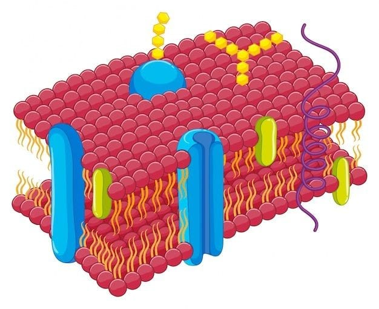
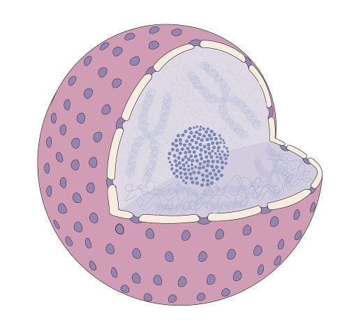

Membrana Plasmática
A membrana plasmática, também conhecida como membrana celular, é uma estrutura fundamental que envolve todas as células, incluindo as células vegetais. Aqui estão algumas características importantes: Estrutura: A membrana plasmática é composta por uma bicamada lipídica com proteínas embutidas. Essa estrutura semipermeável permite a passagem seletiva de substâncias para dentro e fora da célula. Função: A principal função da membrana plasmática é proteger a célula e controlar o movimento de substâncias, como nutrientes e resíduos, entre o interior e o exterior da célula. Ela também desempenha um papel crucial na comunicação celular e na manutenção da homeostase.
Núcleo
O núcleo é uma organela essencial nas células eucarióticas, incluindo as células vegetais. Ele é o centro de controle da célula e contém o material genético (DNA). Estrutura: O núcleo é delimitado por uma dupla membrana chamada carioteca, que possui poros nucleares para a troca de materiais entre o núcleo e o citoplasma. Dentro do núcleo, encontramos o nucléolo, onde ocorre a síntese de ribossomos. Função: A principal função do núcleo é armazenar e proteger o DNA, que contém as instruções genéticas para o desenvolvimento e funcionamento da célula. O núcleo também regula a expressão gênica e coordena atividades como o crescimento celular, a divisão celular e a síntese de proteínas.